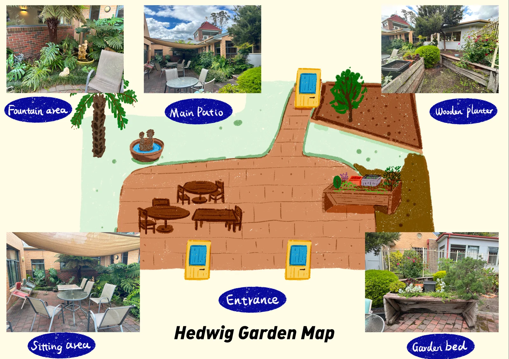
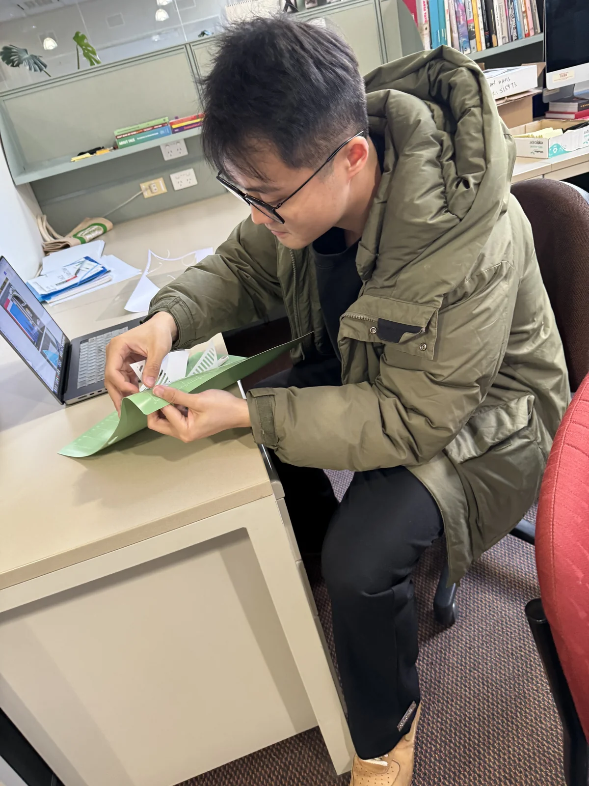
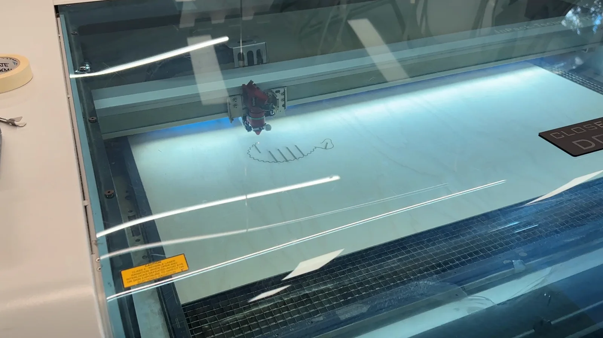
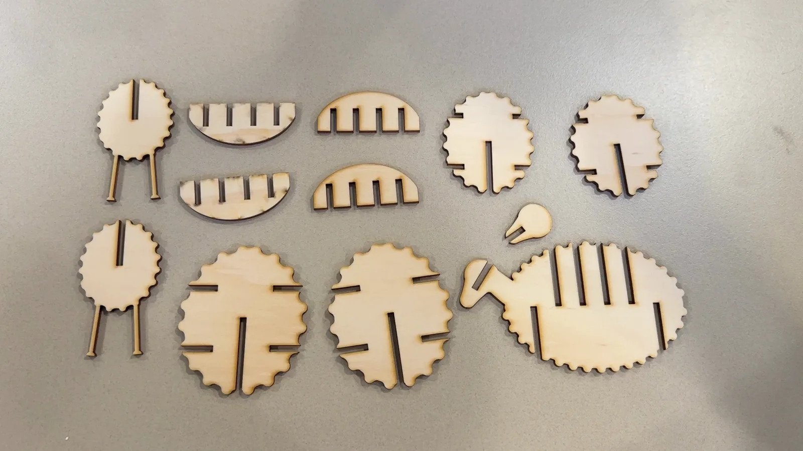
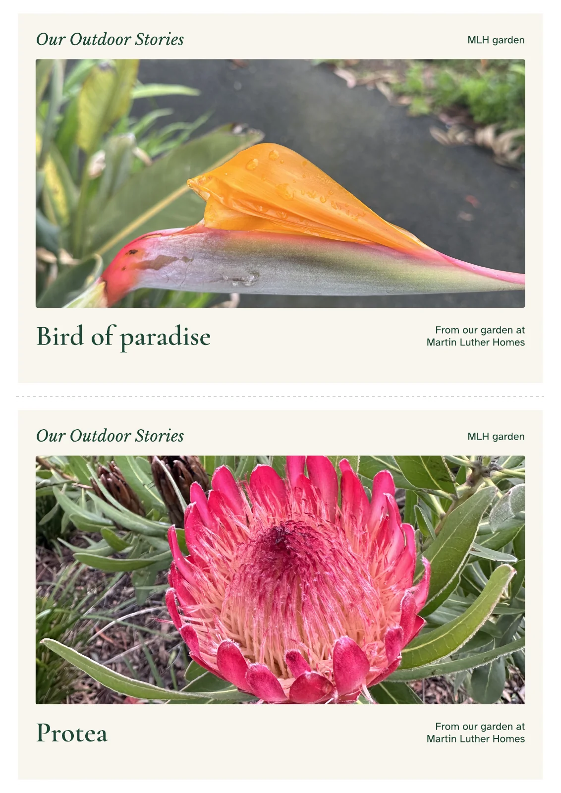
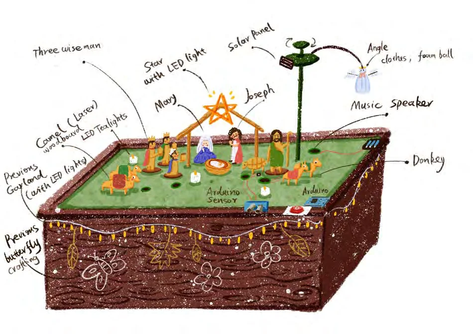
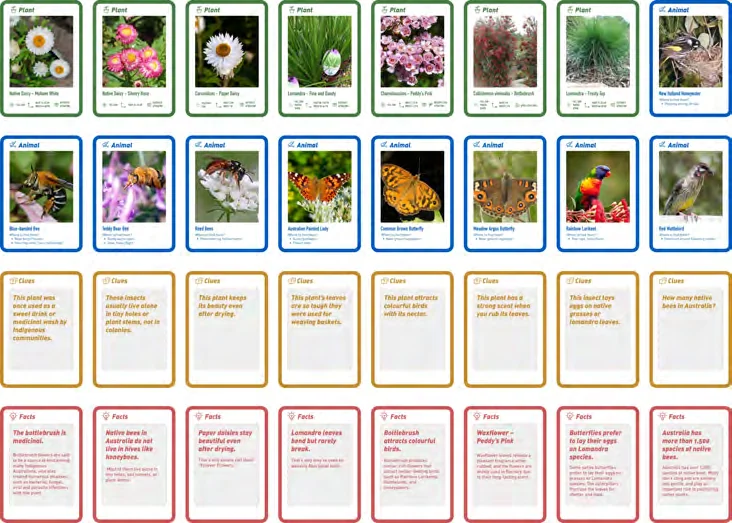
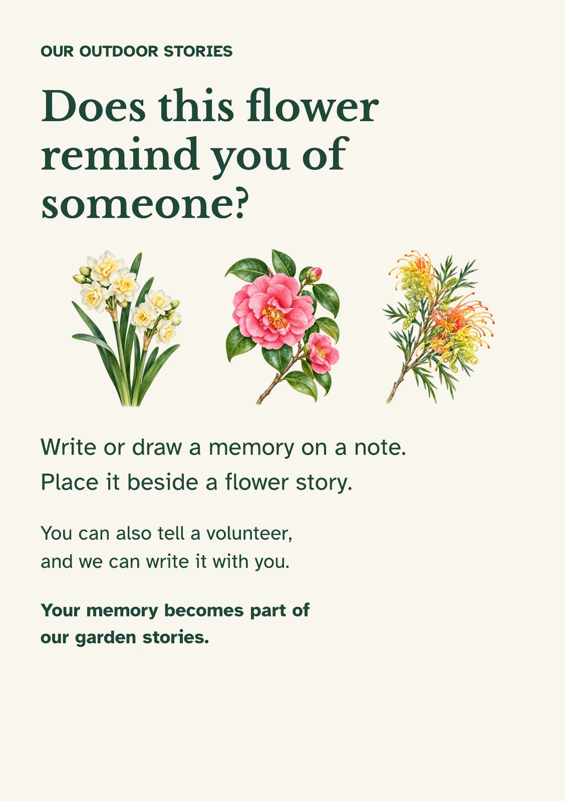
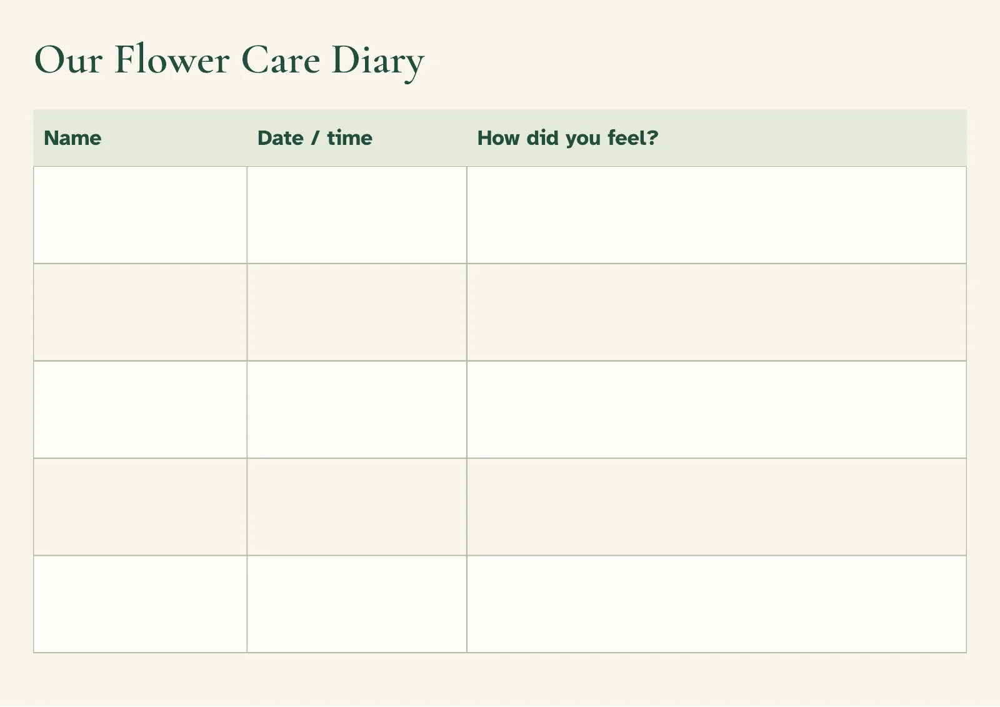

{kind=link}
{kind=link}
{kind=link}
{kind=link}

Making a place discussable
Illustrated maps bring places into a conversation. Pairing drawings with photographs offers several ways to recognise a garden area and talk about where to go.
I draw, make, and test the materials I bring into research. From paper experiments to laser-cut wooden figures, preparation is part of understanding what people can hold, assemble, decorate, and share.


A look inside the preparation for the 2024 crafting study.

I prepare digital outlines for figures, animals, slots, and bases. The drawing connects the visual idea with practical decisions about how an object will be made and put together.

At ProtoLAB, cutting turns a file into physical pieces. Alongside these wooden prototypes, I try paper shapes with the Cricut and prepare materials for the group activities.

The early sheep used many interlocking pieces. Handling and trying the model helped reveal the demands of fitting, holding, and connecting those parts.
Workshop observations and staff feedback informed a simpler sheep: a body shape and two leg pieces. Other figures used an outline and a base, leaving more room for decorating and personal choices.

Illustrated maps bring places into a conversation. Pairing drawings with photographs offers several ways to recognise a garden area and talk about where to go.

Photographic cards bring flowers and foliage into both outdoor walks and indoor conversations. Their role is to invite attention and preferences.

Garden concepts connect crafted objects with their eventual setting. Materials and assembly are adjusted through collaboration and observation.

Identification, clue, and fact cards offer different ways into a topic, from recognising a plant to sharing something unexpected.

A story invitation gives a contribution somewhere to go. The material can support a thought, a drawing, or words recorded with assistance.

Care invitations and a flower diary explore how participation might continue between facilitated sessions. They remain part of an ongoing design inquiry.
I also draw, illustrate, and teach art. For more of my illustration practice and visual explorations, visit my artwork collection.
{kind=link}
{kind=link}
{kind=link}
{kind=link}
{kind=link}